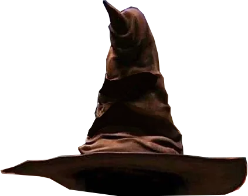
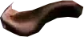
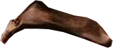

CHARACTER PREVIEW
Give the hat a personality.



JAW OPEN0%
BROW LIFT50%
PHOTO HAT PREVIEW · 2 AXES
00:00.00/00:04.00
PERFORMANCE TIMELINE
ZOOM128 px/s
AUDIO WAVEFORM● JAW OPEN / CLOSE● EYEBROWS LOW / RAISED